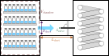
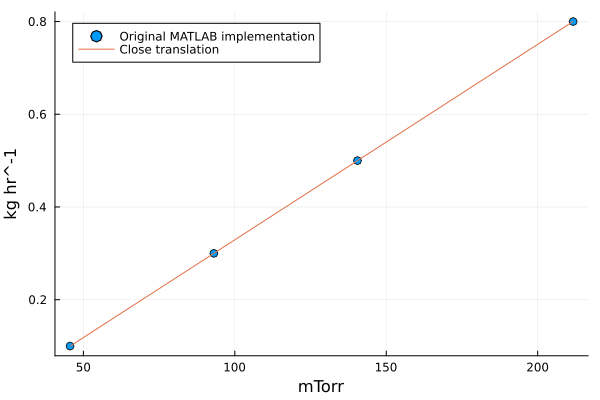
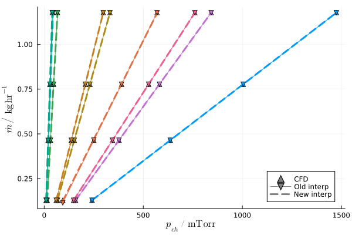

Estimating Equipment Capability
The EC-CURT model, published by Kazarin et al. [2], provides a compact way to get a first estimate of the equipment capability line. This equipment capability limit determines one edge of the design space for the primary drying stage of lyophilization. At a given pressure, this equipment limit is an upper bound on sublimation flux. In many cases, this limit is set by choked flow in the duct from the lyophilizer's main chamber to its condenser; this limit varies approximately linearly with pressure.
The resulting line is given the form $m_\mathrm{flux} = k p_\mathrm{ch} + b$; the EC-CURT model returns the slope $k$ and intercept $b$, given the chamber volume, duct length, duct diameter, and valve thickness (within the duct), as shown in the schematic below. The parameters of this line are often given other names in literature; for example, in the Python version of LyoPRONTO the slope is $b$ and the intercept is $a$.

The model was constructed by measuring equipment capability for 3 lyophilizers of varying size, validating CFD calculations with those measured limits, then doing CFD calculations on a 3x3x3x2 grid in the space of various lyophilizer dimensions: to evaluate on other lyophilizer geometries, a multilinear interpolation is used across this range of conditions. For full details, consult the article. For some lyophilizers at some operating conditions, the condenser's capacity or flow effects around the condenser may be a stricter limitation; the EC-CURT model does not cover that regime.
Close translation
A numerical implementation in MATLAB for the EC-CURT model was provided in the supplementary information of the original article. The CFD data (chamber pressures at all conditions) were translated from there into Julia and provided as part of LyoPronto.jl.
LyoPronto.ECCURT.eq_cap_line — Function
eq_cap_line(d, vt, l, volume)
Compute the equipment capability line for given geometry parameters. The resulting object can be called with a pressure in mTorr to get the corresponding mass flow rate in kg/hr. The line's slope and intercept can be accessed with line.k and line.b, respectively.
If provided with Unitful.Quantity inputs, the geometry parameters will be converted to the expected units (mm for lengths, m^3 for volume) before calculation, and the result will have Unitful units as well. If provided with plain floats, plain floats will be returned.
The input values are:
d: Diameter of the duct [$mm$].vt: Thickness of the butterfly valve inside the duct [$mm$]l: Length of the duct [$mm$].v: Volume of the product chamber [$m^3$].
LyoPronto.ECCURT.eq_cap_pressure — Function
eq_cap_pressure(m, D, valve_thickness, L, volume)
Call eq_cap_line to get the equipment capability line for the given geometry parameters, then evaluate that line with mass flow rate m in kg/hr to get minimum controllable pressure in mTorr.
If provided with Unitful.Quantity inputs, the geometry parameters will be converted to the expected units (mm for lengths, m^3 for volume) before calculation, and the result will have Unitful units as well. If provided with plain floats, plain floats will be returned.
The input values are:
d: Diameter of the duct [$mm$].vt: Thickness of the butterfly valve inside the duct [$mm$]l: Length of the duct [$mm$].v: Volume of the product chamber [$m^3$].
The original implementation uses MATLAB interpn with the spline method, which does a quadratic interpolation on dimensions with 3 sample points and linear interpolation on dimensions with 2 sample points. This Julia implementation uses Interpolations.jl, which only allows linear interpolations, so it will not return numerically identical results to the original MATLAB implementation, but gives the same behavior.
Here is a comparison of points from the original to this implementation:
using LyoPronto, Plotsm_test = [0.1, 0.3, 0.5, 0.8]u"kg/hr"D_t = 120u"mm"vth_t = 50u"mm"L_t = 300u"mm"V_t = 0.092u"m^3"p_validate = [45.6, 93.1, 140.5, 211.7]u"mTorr" # Taken directly from MATLAB results# p_test = ECCURT.eq_cap_pressure.(m_test, D_t, vth_t, L_t, V_t) # This imitates the MATLAB APIline = ECCURT.eq_cap_line(D_t, vth_t, L_t, V_t) # This is the way you will usually use this modelp_test = (m_test .- line.b) ./ line.k # This is necessary because we are working from mass flow to get pressure# To get mass flow from pressure:# m_check = line.(p_test)scatter(p_validate, m_test, marker=:o, label="Original MATLAB implementation")plot!(p_test, m_test, label="Close translation")
Newer application of same data
The original MATLAB implementation constructed lines by evaluating slope and intercept from the two higher mass flow rates at each geometry, neglecting the other two sampled points, and interpolating the slope and intercept values across lyophilizer geometries. To make full use of the reported data, we add a new implementation which interpolates the pressures instead at all four mass flow rates, then regresses a new slope and intercept for the mass flow as a function of the interpolated pressures.
This is provided via the function ECCURT.eq_cap_line_new:
LyoPronto.ECCURT.eq_cap_line_new — Function
eq_cap_line_new(d, vt, l, volume)
Compute the equipment capability line for given geometry parameters using interpolation on the pressures at the four mass flow rate sample points.
The resulting object can be evaluated at pressure p, as a float in mTorr (if dimensions were given as plain floats) or with Unitful pressure (if dimensions were given as quantities) to get the corresponding mass flow rate in kg/hr. To invert a resulting line, access its slope with line.k (in kg/hr/mTorr) and its intercept with line.b (in kg/hr).
If provided with Unitful.Quantity inputs, the geometry parameters will be converted to the expected units (mm for lengths, m^3 for volume) before calculation, and the result will have Unitful units as well. If provided with plain floats, plain floats will be returned.
The input values are:
d: Diameter of the duct [$mm$].vt: Thickness of the butterfly valve inside the duct [$mm$]l: Length of the duct [$mm$].v: Volume of the product chamber [$m^3$].
The new interpolation is, for the most part, indistinguishable from the original approach, both of which match the base CFD data well. We can show this by examining at some of the original CFD conditions (ECCURT.M_DOT, ECCURT.D_SAMPLE, etc.), but you will generally not need to access these variables.
using Latexify # for making a nice plotm_orig = ECCURT.M_DOT*u"kg/hr" # the underlying valuesvi = 1v = ECCURT.VOLUME_SAMPLE[vi]li = 2l = ECCURT.L_SAMPLE[li]plot(u"mTorr", u"kg/hr")for (di, d) in enumerate(ECCURT.D_SAMPLE), (dai, da) in enumerate(ECCURT.DA_SAMPLE) c = di+(dai-1)*3 # color picker vt = d/da oldline = ECCURT.eq_cap_line(d, vt, l, v) newline = ECCURT.eq_cap_line_new(d, vt, l, v) pch = ECCURT.PCH[:,vi, di, dai, li] scatter!(pch, m_orig; c, marker=:utriangle, label="") plot!(pch, newline.(pch); c, linestyle=:dash, lw=3, label="") plot!(pch, oldline.(pch); c, marker=:dtriangle, lw=1, label="")end# Dummy series to make a common legendscatter!([Inf], [Inf], c=:gray, marker=:utriangle, label="CFD")plot!([Inf], [Inf], c=:gray, marker=:dtriangle, lw=1, label="Old interp")plot!([Inf], [Inf], c=:gray, linestyle=:dash, lw=3, label="New interp")# Last tinkeringplot!(xlabel="p_{ch}", ylabel="\\dot{m}", unitformat=latexify)
Checking range of model parameters
Both ECCURT.eq_cap_line and ECCURT.eq_cap_line_new will emit a warning if the input lyophilizer geometry is outside the range of parameters with which this model was constructed. To programmatically check in advance whether a set of parameters is in range, the following function is provided:
LyoPronto.ECCURT.is_in_model_range — Function
is_in_model_range(d, vt, l, volume)
Check whether the given geometry parameters are within the range of the original data used to generate the equipment capability curves.
The range of geometries for interpolation is:
| Lower limit | Upper limit | |
|---|---|---|
| Duct diameter | 59.6 mm | 304.8 mm |
| Ratio of duct diameter to valve thickness | 2.24 | 21.75 |
| Duct length | 100 mm | 890 mm |
| Chamber volume | 0.092 m$^3$ | 0.44 m$^3$ |
Outside of these ranges, the model uses linear extrapolation. This likely still yield useful results when the geometry of interest is only a little outside the range, but is not validated in the original study.